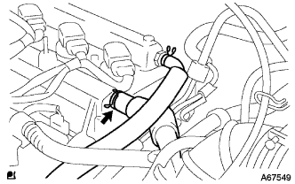

Oil pump ASSY removal |
| 1. Battery minor Starminal Cut off |
| 2. Remove the front tire RH |
| 3. Remove the cylinder head cover No.2 |
 |
Remove the four nuts and remove the cylinder head cover No.2.
| 4. Ignition coil No.1 |
Remove the connector and bolt of the ignition coil and remove all the ignition coils.
| 5. Cut the ventilation hose |
 |
Cut the ventilation hose.
| 6. Ventilation hose No.2 disconnected |
|  |
Cut the No.2 ventilation hose.
| 7. Cylinder head cover SUB-ASSY |
 |
Remove 9 bolts and two nuts and remove the cylinder head cover.
| 8. Fan & Alternator V Belt removed |
 |
Loosen the adjustment bolt A and the fixing bolt B.
Loosen the tension of the V belt and remove the V belt.
| 9. Remove the alternator ASSY |
 |
Take off the terminal cap.
Separate the connector and harness clamp.
Remove the nut and remove the B terminal terminal.
 |
Remove the bolt A and nuts and remove the fan belt agasting bar.
 |
Remove the fixed bolt B and remove the alternator.
| 10. The engine Anda cover RH is removed |
Remove two bolts and two screws.
Remove the nut and remove the engine undercover RH.
| 11. Drain the engine oil |
| 12. Cooling solution (Toyota genuine super LLC) extract |
Open the radiator kayatsu.
Loosen the radiator drain kotsu plug and extract the cooling solution.
| 13. Vane pump V belt (power steering belt) is removed |
 |
Loosen the fixing bolt A and bolt B for adjustment.
Remove the V belt by loosening the tension of the V belt.
| 14. Remove the water pump pulley |
Use SST to fix the water pumpuri.
 |
Remove the three bolts and remove the water pumpuri.
| 15. Water pump ASSY removes |
 |
Remove 3 bolts and two nuts and remove the water pump ASSY.
| 16. The engine mounting insulator SUB-ASSY RH is removed |
 |
Supporting the engine with a jack via a piece of wood.
 |
Remove 5 bolts and nuts and remove the engine mounting insulator RH.
| 17. The engine mounting bracket RH is removed |
 |
Remove the four bolts and remove the engine mounting bracket RH.
| 18. Crankshaft Dampa SUB-ASSY |
No.1 Cylinder compressed death point set
 |
Rotate the crankshaft dampa correctly and match the matching mark (notch) to the position of the chieen cover 0 °.
At this time, confirm that the combination of the camshaft timing gear is at the figure in the figure.
Operate the jerche, lower the engine front side, and set the SST to set.
 |
Use SST to fix the crankshaft dampa and remove the bolt.
Take off the crankshaft damper.
| 19. Remove the crank position sensor |
 |
Cut the connector.
Remove the bolt and remove the crank Posysisillon sensor.
| 20. Camshaft timing oil control valve ASSY is removed |
Camshhaft timing Oil Control valve is disconnected.
Remove the bolt and remove the camshaft timing oil control valve.
| 21. Oil pump ASSY removes |
 |
Remove 15 bolts and nuts.
 |
Use a flathead screwdriver wrapped with protective tape to remove the oil pump ASSY.
| 22. Remove the oil pump seal |
 |
Use a flathead screwdriver with protective tape to remove the oil seal.